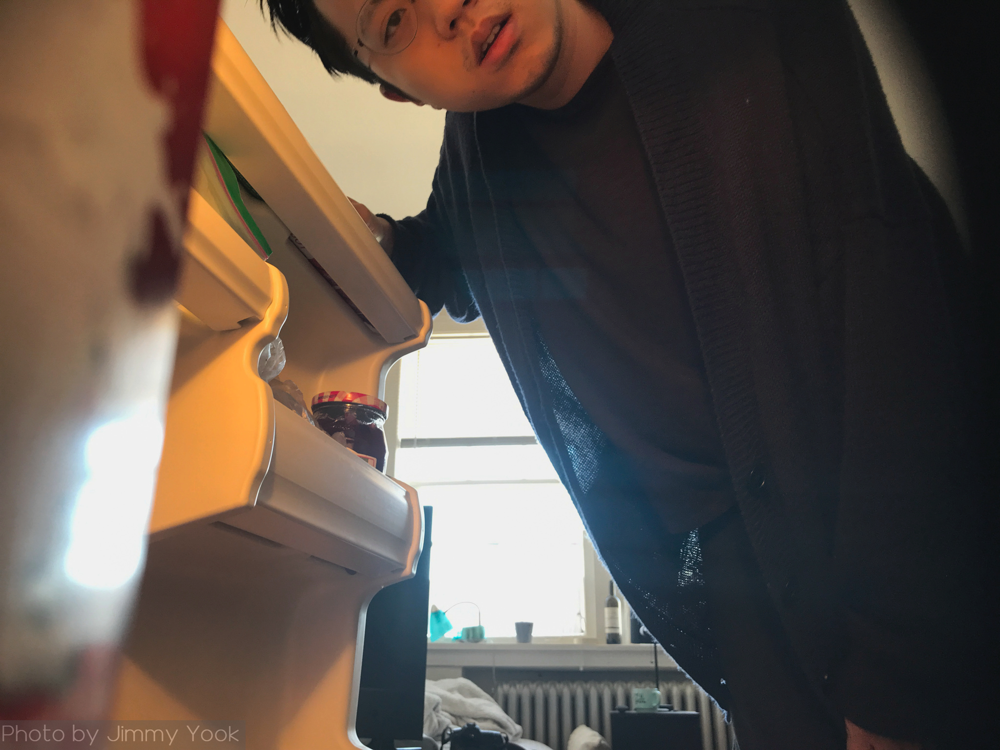
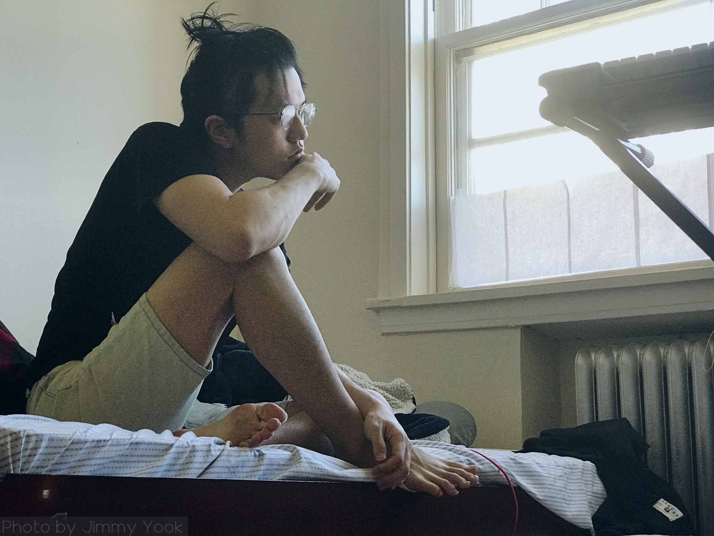

Home with myself
Practicing self-quarantine with no other human brought me into a tornado of emotions. Here are some photos of myself I shot to record my feelings.
Sleeping is a way to fill up the excess time. I tend to sleep more as I become more tired of the situation.
Watching outside the windows every morning became a habit. I want to know if I’m missing out on anything or how many more people are daring to come out than yesterday. The sound of conversations also interests me too – they’re not common these days.
Watching the sun rise has been harder these days in Evanston.
 Filling up the refrigerator is also an important duty for survival. It’s not the apocalypse, but I’m trying to prepare myself as if it was. No one else can get food for me if I, say, suddenly can’t get up tomorrow.
I know that germs don’t last that long on inanimate objects, but I’ve been trying to touch everything with something else than my hand. I don’t know if it’s actually effective though.
Grocery shopping is a weekly routine these days. I make sure my bags are full of a two-week’s amount of food.
 About 5 minutes every morning is spent thinking about what I could do differently today.
My bathroom is a good place for natural light to come in without being interfered. A wide view of the city square can be seen from this view.
Most of the day is spent on a seat, so I would stand up and wander sometimes just to feel like my body is still working.
Insufficient sunlight could mean more hardships for praciticing self-quarantine alone.
I’m usually an avid napper. I would nap to take a break from all the work I have done, but these days I feel like it’s part of my work to stay calm and patient.